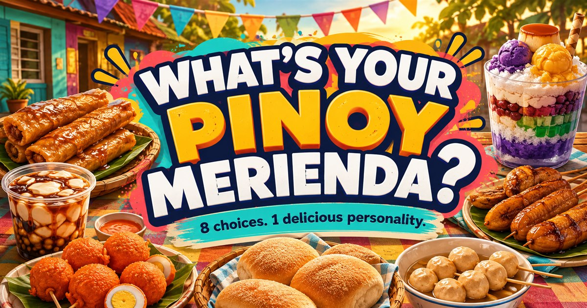

MERIENDA MO, PERSONALITY MO
What's Your Pinoy Merienda?
Gutom ka na?8 tasty results
Merienda reveals everything.
Eight mabilisang choices will match your personality with one iconic Filipino snack.
PILI KA AGAD
OR
YOUR PINOY MERIENDA IS
This playful percentage comes from your choices, not live population statistics.

The Filipino snack personality quiz
Merienda is more than a snack break. It can be taho before the day starts, fishballs after class, pancit canton during a late-night kwentuhan, or halo-halo when one flavor is never enough.
This lighthearted quiz turns familiar merienda moods into eight shareable personalities. It is made for friendly comparison and entertainment—not a real personality assessment.